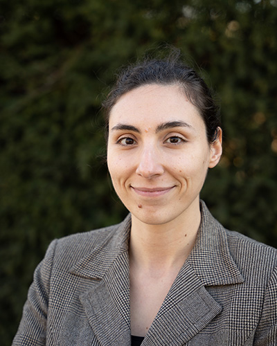
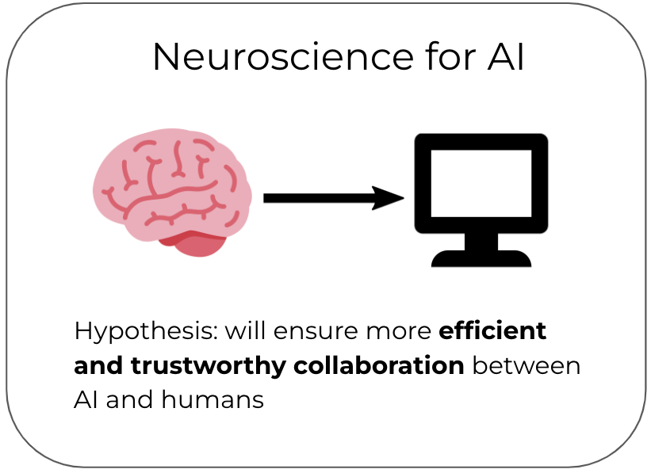
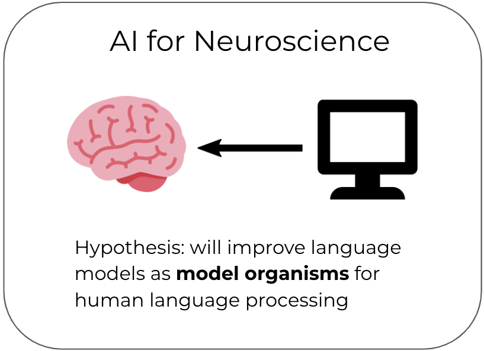

Tenure-track faculty (W2)
Max Planck Institute for Software Systems
Email: mtoneva [at] mpi-sws [dot] org
Office: Room 438 in E1.5, Saarbrücken, Germany
Curriculum Vitae
Google Scholar
X/Twitter
Bluesky

Bio
My research is at the intersection of Machine Learning, Natural Language Processing, and Neuroscience, with a focus on building computational models of language processing in the brain that can also improve natural language processing systems.
I lead the Bridging AI and Neuroscience group (BrAIN) at the Max Planck Institute for Software Systems. Our long-term goal is to improve alignment between AI systems and the human brain. We believe this improved alignment will benefit both AI and neuroscience in two main ways:


I also enjoy taking care of (helpful) bacteria and yeast and turning them into Bulgarian yogurt, kombucha, and sourdough bread from time to time. One of my favorite ways to relax is to bike or run along the many beautiful European paths with my husband Christoph Dann, who is always looking for sample efficient ways to reinforce my learning.
News
- Sept 26: 🚨 Two open postdoc positions in the ERC-funded project BrainAlign! Application deadline: Oct 13, 2026. Read more: position on NeuroAI , , position on human behavioral evaluation of LMs .
- Sept 26: ⭐ PhD student Camila Kolling selected to attend the Heidelberg Laureate Forum!
- Aug 26: 📖 Our review of the last decade of comparing brains to deep neural networks is out in Trends in Cognitive Sciences! Congratulations to postdoc Emin Celik and collaborators!
- July 26: 🎉 PhD student Gabriele Merlin giving an Oral presentation at CoNLL 2026 on his work re utility of brain data for LM-fine-tuning!
- July 26: 🎉 PhD student Mathis Pink and research intern Michela Proietti presenting works at ICML 2026 respectively on temporal memory in LLMs and on fine-grained input attribution of LLM-brain alignment!
- April 26: 🎉 PhD student Gabriele Merlin and research intern Alan Sun presenting works at ICLR 2026 respectively on downstream effects of misalignment of LMs to human brains and on mechanistic interpretations across different neural networks!
Recent and Upcoming Talks
- July 4: Keynote at ACL Workshop on "Computational Developmental Linguistics"
- July 8: Talk at FENS Symposium on "The modern neuroscience lab in the age of AI"
- Aug 25: Talk at LCT Summer School at Saarland University
- Oct 5: Talk at Brain Conference
- Dec 13: Keynote at NeurIPS Workshop on "Personalized, aligned, long-term memory for AI systems"
- Dec 13: Keynote at NeurIPS Workshop on "AI and the Self: Human Identity, Authenticity, and Agency in the Age of AI"